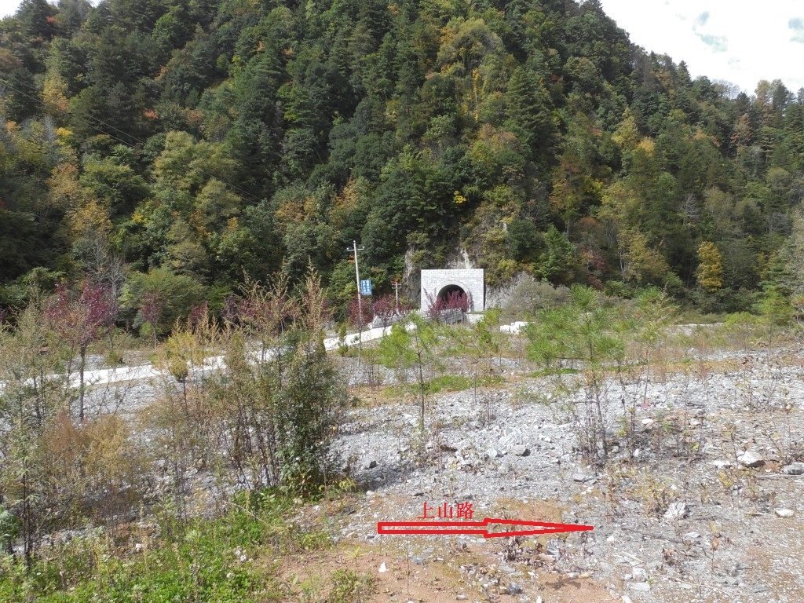

发信人: hemind(hooft), 信区: outdoor
标 题: 太白记事
发信站: 饮水思源 (2014年10月12日01:50:42 星期天)
1.各种不靠谱
这一次的太白算是比较顺利，特别是上山之后，几乎没什么特别的状况。
没有出现可能的坏天气大风雨雪，但就是因为太顺利了，潜在的问题就没有
显现，所以我要写一写不靠谱的地方。
从准备阶段开始说起吧，其实9月17日才定下来要去太白，离出发刚好两周，
但用来准备的时间太短，不能做较好的体能储备。结果就是准备阶段比较忙，
训练量不够，仅3次爬楼4次跑步，而且大家的时间也不合。经验是最少提前
3-4周准备，而且前提是队伍中至少要有一人走过。
关于气罐，我们一开始准备让包车师傅帮买气罐，师傅肯定想的是买了气罐我们又
不去怎么办，所以肯定不会帮忙买。我们最终是在厚畛子的唯一的超市买到了
（之前和那边的向导确认过）。经验是，如果从西安开始包车，提前至少一周
在网上买寄到包车师傅家里。如果从厚畛子包车，那就让包车师傅确认厚畛子的
超市里有没有气罐。
出发那天我忘定闹钟导致晚出发15分钟，这个不应该。
地铁上阿彬告诉我忘带防潮垫，还说没问题，最后打电话给雪哥，正好有个多
的垫子。紧急情况下防潮垫是可以用背包衣物等代替，但是效果舒适度会差很多
啊。
火车上，yh和阿彬各拿出一本书来，出发前一切从简的要求全忘了。
下火车半小时才联系包车师傅，因为手机没电了，充好电才开手机找到师傅
的号码！这些信息早就应该放在打印的攻略上啊。所以从下火车到坐上包车，
用了一个小时！多花这些时间很有可能会让我们当天到不了老庙子。
在进山口处转了半个小时，才找到上山的路！大家太依赖于我了，而我两年前
只是跟着HYP走的，肯定不会记得入口的样子了。归因于看攻略不仔细，像进
山口这种重要的信息应该仔细看看。
 screen.width - 200){this.width = screen.width - 200}">
雪哥没带保暖抓绒帽算是一个装备上的失误，毕竟冲锋衣或者羽绒服自带的帽子
保暖效果没那么好。
早上拔营太慢了，前两天用了2个小时...最后一天上心了，也还是用了1个小时10
分钟，还是没有赶早不赶晚的意识，天亮就出发，当天行程的调节余地就会比较大。
2.说说线路
这次计划都督门上营头下，备用汤峪下，原路可作为下撤路线。
计划第一天到老庙子，第二天到文公庙，第三天到大殿，那么第四天中午就可以出山了，
如果第二天只能到大爷海，第三天到平安寺，第四天晚上出山也行，我们买的是第五天下
午的回程票。再说在平安寺可以走羊皮沟下山。
因为火车是4点半到西安，结果是当天各种耽误接近2个小时也还是在天黑前到了老庙子。
都督门到老庙子这一段，路径很明显，稍有容易走岔的地方都会有路标，所以如果走到不
像路的地方多半是走错了。太白庙旁边就是溪水，通往大坪的路上还有几次过溪水，如果
想要在大坪扎营的话需要提前打好水，大坪没水源。老庙子水源很好，在面向庙子的右边
，营地很大。
从老庙子出发的路在面对庙子的左侧，也是非常清晰的路，一直到离莲花石10分钟的地方
需要横切一小段石海，上面有路标，别走下山路。我们当时是看到几个人从下面上来，想
起icer的攻略里他们当时走错的地方应该就是这里，就果断横切了。
从莲花石到万仙阵过跑马梁到大爷海，可以说一路都是画在石头上的箭头，注意孤
零的玛尼堆很有可能就是路标。如果是下了新雪，这路就很难辨认，难度就会增加不少。
大爷海到文公庙，景区路无压力，到文公庙是4点3刻，考虑到大家状态和后面的路的未知
性，我们决定扎营文公庙，事实证明我们的选择是对的。
还是一样的大爷海
screen.width - 200){this.width = screen.width - 200}">
第三天，5点起床，磨蹭到7点1刻才出发，路在文公庙的后面，和前面去汤峪的大陆分居两
侧。路也很明显，忽上忽下，一路红杉林和草甸交替。别人攻略里的松林营地不在我们走
的路上，到放羊寺之前，没有水源，没有合适的扎营地。放羊寺就是一个由石头和木头搭
起来的小棚子，前面有一块很大的平地，扎十几顶帐篷都没问题。打水需要往下走一段路
。
放羊寺
screen.width - 200){this.width = screen.width - 200}">
明星寺
screen.width - 200){this.width = screen.width - 200}">
手痒了
screen.width - 200){this.width = screen.width - 200}">
从放羊寺到明星寺到平安寺，差不多的都是在山腰横切，但是遇到山谷山脊就要上上下下
。平安寺就比前两个寺庙豪华一些了，还有人住，种的有菜，水源很充足，庙前的空地比
放羊寺的空地都要大，应该也要收扎营费。
平安寺
screen.width - 200){this.width = screen.width - 200}">
从平安寺走向北的哪条路，沿着山腰走，一段长的下坡后再上升，到斗母宫，海拔几乎没
降。斗母宫是一些石头堆砌的房屋，没有水源，有几片小空地可扎营。斗母宫一路下，1个
半小时下到大殿，宫殿宫殿，这个大殿比之前的斗母宫不知道豪华了多少倍，院内可扎营
，院后面有一口水井。下午4点3刻到大殿，考虑到大家的状态，而且如果要赶到有水源的
下白云，还需要下降700米左右，大家的膝盖可能吃不消，而且明天路程也不多了，没有必
要这么赶，决定就地扎营。
大殿处
screen.width - 200){this.width = screen.width - 200}">
悠闲的雪哥
screen.width - 200){this.width = screen.width - 200}">
第四天，大殿出发，一路下降，经过上白云下白云，岔路很容易分辨，雪哥队记里写得也
很清楚，我就不重复了，之后就是大路下到底，过刘家崖出蒿坪保护站。保护站有人问我
们哪里过来的，我搞忘提醒zyf，他就说了都督门，就被查票，好说歹说没有买票走人了。
最好的方法就是直接说羊皮沟上来的，没去太白山，什么事都不会有。再往外到一农家，
一问，正好有车送我们到营头镇，不用走这10公里公路了。
营头到眉县坐公交，眉县到西安可包车，可班车。
3.说说装备和食物
衣着方面，一件薄的羽绒服还是很有必要，这次不是特别冷但在营地也用上了。
还有冲锋裤和雪套，虽然这次没用上，但是考虑到可能的雨雪天气，带上是没错的。
另外保暖神器抓绒帽，防晒组合抓绒手套、头巾、大檐帽、太阳镜，太阳镜一定要
偏光的，才能防眩光，近视的话迪卡侬的偏光太阳镜夹挺好的。
在营地，为减轻重量，带了两个T2，我雪哥阿彬睡秋梦里不算太挤。睡袋我用的是
是黄鹂，结果热死了...在雪哥的垫子上躺了一下，爽死啦！
另外一个五六百毫升左右的保温杯还是很有必要的，累了停下来喝点热水那叫一个爽啊，
另外保温效果好的话，晚上就可以把水杯灌满，早上起来可以边吃早餐边烧路上带的热水
了，可以节约不少时间。
这次买了2个450g的气罐，结果3天差不多用完了，如果是雨雪天气，更冷或者需要融雪，
3个450g更保险一些，或者6个230g的小气罐。
为了杜绝腐败以及控制重量，这次做了一个表格，计划了4天的食物，每人还有两小包
压缩饼干备用。买好食物后，把每一顿的食物装一个袋子，早中晚的食物袋3个人分开装，
这样食物在谁那里非常清楚。
screen.width - 200){this.width = screen.width - 200}">
结果显示量控制得非常好，早餐稍有余量，午餐和晚餐都很合适。只是第三天的时候，大
家对午餐都有些厌烦了，主要是雪饼和沙琪玛都是甜的，早餐的饼干都是咸的，大家都OK
，以后可以考虑换着口味来。
附：
太白个人装备清单：
有帽冲锋衣、冲锋裤（抓绒裤）、速干衣、速干裤（两条）、防寒衣物（一件）、雪套、
防风帽或头巾、大檐帽、劳保手套（抓绒）、换洗衣服（内衣一套即可，下山换洗）、厚
袜（2-3双）、登山杖（至少一根）、登山鞋、墨镜、餐具（欧尚小型塑料碗+叉或勺）、
护膝、 背包罩、刀具（一共一把就行）、睡袋（1厚+1薄）、头灯（电池2-3对）、防水袋
（大垃圾袋可替）、防晒霜、护唇油、保温杯（大容量）、暖宝宝（可选）、少量现金、
学生证、身份证
太白公共装备清单：
帐篷：2个T2（注意拉链，修补杆，备用风绳）
炉头：火枫105+116
气罐：2*450g或4*230g
锅：1协会大锅+1小锅
打火机+打火石
GPS+指南针+防水地图2份
--
Physics is to math what sex is to masturbation.
※ 来源:·饮水思源 bbs.sjtu.edu.cn·[FROM: 58.196.151.76]
※ 修改:·hemind 于 2014年10月12日01:58:33 修改本文·[FROM: 58.196.151.76]
※ 修改:·hemind 于 2014年10月12日02:10:01 修改本文·[FROM: 58.196.151.76]
※ 修改:·hemind 于 2014年10月12日02:53:54 修改内容·[FROM: 58.196.151.76]
※ 修改:·hemind 于 2014年10月12日02:55:28 修改内容·[FROM: 58.196.151.76]
※ 修改:·hemind 于 2014年10月12日02:57:46 修改内容·[FROM: 58.196.151.76]
※ 修改:·hemind 于 2014年10月12日02:59:37 修改内容·[FROM: 58.196.151.76]
※ 修改:·hemind 于 2014年10月12日03:00:59 修改内容·[FROM: 58.196.151.76]
※ 修改:·hemind 于 2014年10月12日03:02:04 修改内容·[FROM: 58.196.151.76]
※ 修改:·hemind 于 2014年10月12日03:03:32 修改内容·[FROM: 58.196.151.76]
※ 修改:·hemind 于 2014年10月12日03:03:48 修改内容·[FROM: 58.196.151.76]
※ 修改:·hemind 于 2014年10月12日03:04:27 修改内容·[FROM: 58.196.151.76]
|